E-Commerce Product Sales Analysis
Analyzing 20,000 online sales transactions to uncover top-selling products, customer purchasing behavior, and quarterly demand by region — to support marketing, inventory, and pricing decisions.
Stack: Power BI · Excel · Data Visualization · Customer Segmentation · SWOT
1 · Introduction
In the digital era, where e-commerce businesses are growing rapidly, analyzing product sales data is crucial for understanding market trends, customer behavior, and product performance. The E-Commerce Product Sales dataset from Kaggle provides insight into online sales, including order details, revenue, product categories, and other key factors.
This project analyzes sales trends to uncover key insights — top-selling products, factors influencing sales, and customer purchasing behavior — that help a business refine its marketing strategy, optimize inventory, and set effective pricing to maximize revenue.
Dataset columns: Sale ID, Product Name, Category, Price (USD), Quantity, Customer Age, Customer Gender, Discount, Payment Method, Region, Sale Date, Total Sales (USD).
2 · Product Analysis
There are five products in two categories: Accessories (headphones) and Electronics (laptops, smartphones, smartwatches, tablets).
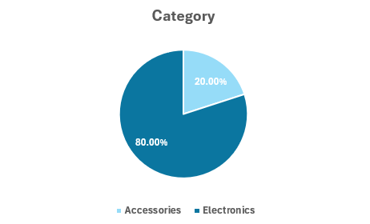
Across the 20,000 transactions, the analysis compared purchase volume and revenue by product.
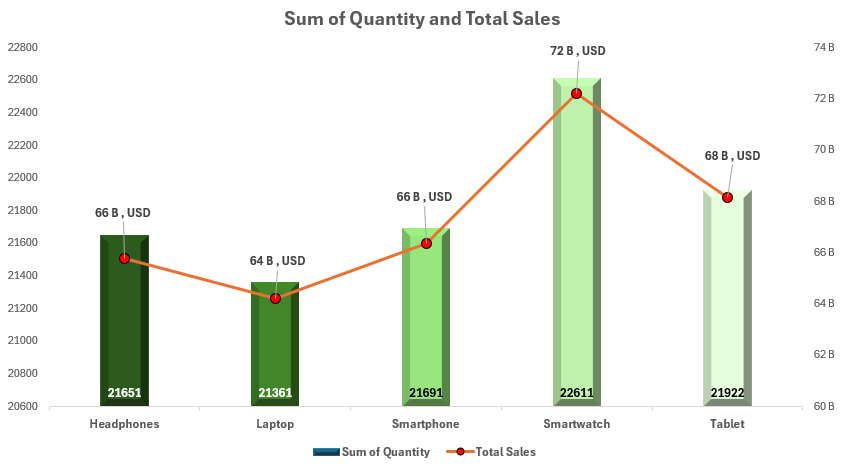
📊 Smartwatches recorded the highest sales, followed by tablets, smartphones, headphones, and laptops.
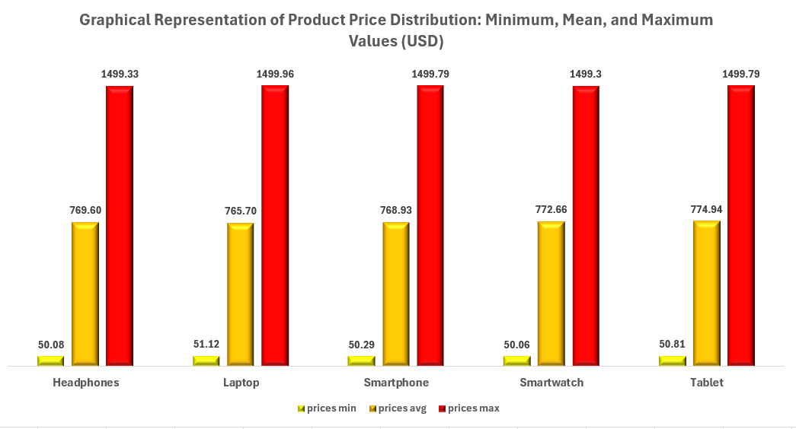
3 · Customer Analysis
Orders were broken down by gender and product to show which products are most popular with each group — input for next quarter’s marketing plan.
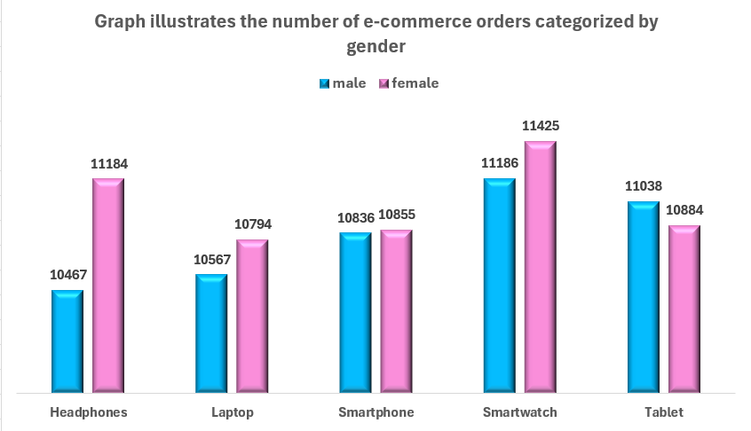
To understand purchasing behavior further, order volume was compared across age groups and gender to find the segments with the highest order volume.
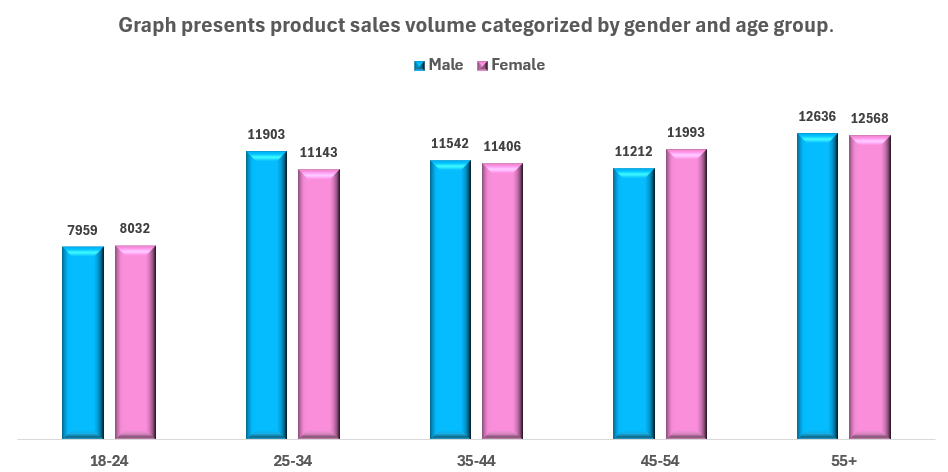
The customer base splits almost exactly in half between female and male customers — so products appeal broadly, and campaigns can be tuned by age rather than gender.
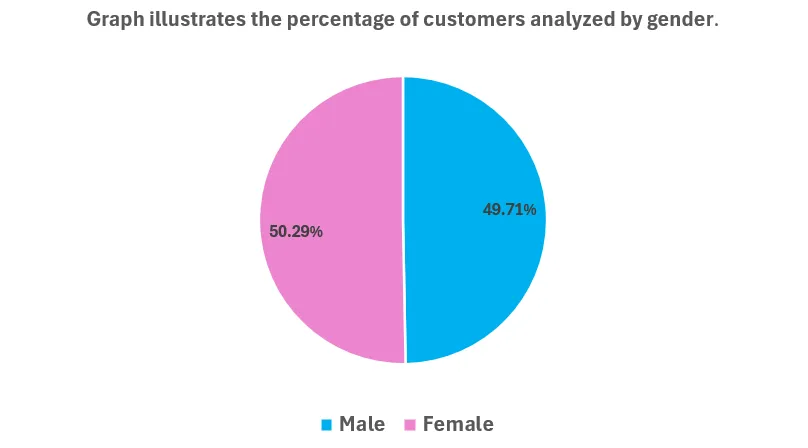
Payment behavior was analyzed across four methods: Bank Transfer, Credit Card, Debit Card, and PayPal.
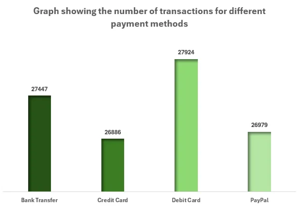
Finally, purchases were segmented by age group within each gender to see which demographic buys which product most often.
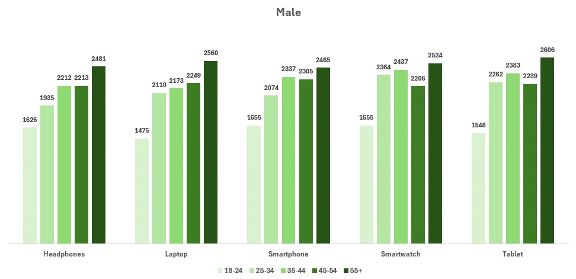
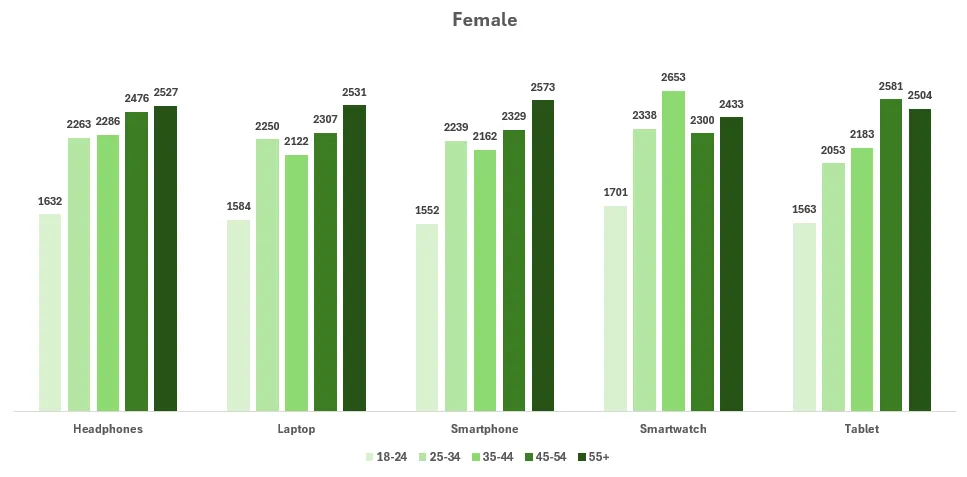
4 · Quarter Analysis
Orders were segmented by quarter and continent (2023–2024) to see which region ordered most in each period — a basis for inventory planning in the upcoming quarter.
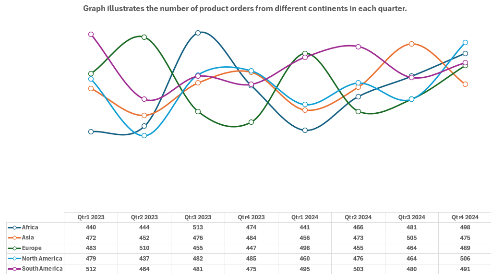
The same view by product shows which products peak in which quarter.
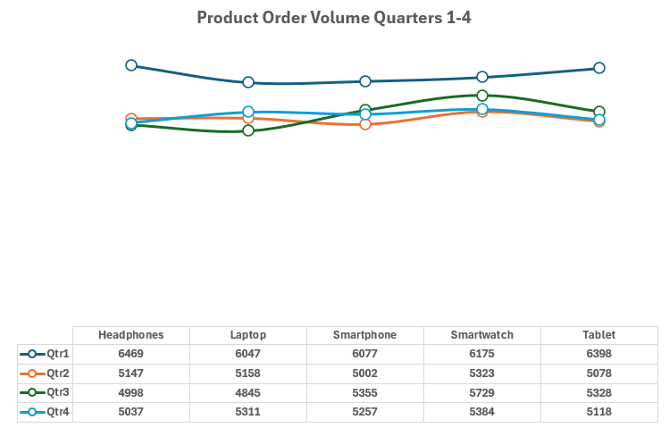
5 · SWOT Analysis
| ✅ Strengths | ⚠️ Weaknesses |
|---|---|
|
|
| 📈 Opportunities | ⚡ Threats |
|
|
6 · Conclusion
Sales performance
Sales are strongest in the Electronics category, with smartwatches, laptops, and smartphones driving revenue. High-value products contribute most of total sales, while affordable items keep a steady volume. Regional distribution shows substantial sales in South America, Asia, and Africa — strong international demand and room for expansion.
Customer behavior
The customer base spans many age groups and is almost evenly split by gender, so products appeal broadly and campaigns can be tailored by age segment. Debit Card and PayPal are popular payment methods — optimizing the checkout experience could lift conversion and reduce cart abandonment.
Risks
Competition in electronics is intense, with pricing pressure and fast innovation cycles. Demand fluctuations can cause overstock or shortages, so inventory planning should use the quarterly demand patterns above. International shipping costs and delays also need managing.
Dataset: E-Commerce Product Sales (Kaggle) · Tools: Power BI, Excel